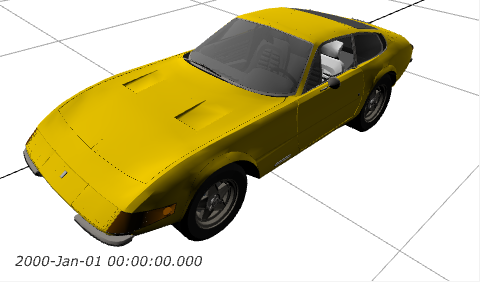
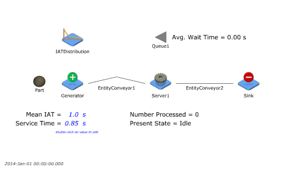
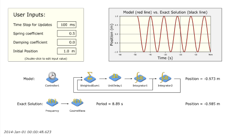
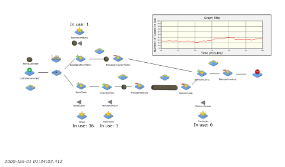

Support the development of open-source JaamSim software.
Manuals and Documentation
- JaamSim User Manual (v2021-04)
- JaamSim Release Notes (v2023-07)
- JaamSim Programming Manual (rev 0.51)
Citing JaamSim
Please Cite JaamSim as the following, updating the version as needed.
JaamSim Development Team (2016). JaamSim: Discrete-Event Simulation Software. Version 2016-14.
URL http://jaamsim.com. doi:10.5281/zenodo.57118
BibText entry:
@Manual{,
title = {JaamSim: Discrete-Event Simulation Software},
author = {{JaamSim Development Team}},
year = {2016},
note = {Version 2016-14},
url = {https://jaamsim.com},
doi = {10.5281/zenodo.57118}
}
Example Models
JaamSim includes a large collection of example models that are built into the software under the 'Help' menu. Some of these models are shown below.
3D Graphics

Server and Queue

Harmonic Oscillator

Cafe Model

The Big Lean Simulation Library
The Big Lean Simulation Library was created specifically to give Lean Six Sigma instructors an easy way to quickly demonstrate complex concepts to their students. The simulations are small and take between approximately 5 to 30 minutes to show. Each focuses on just a few concepts so you can show them interspersed throughout the class or all at once. They have different motifs (manufacturing, healthcare, back office work, etc.) so you could present different sets of simulations depending on your audience.
The Big Lean Simulation Library by The Big Lean Simulation Library, LLC is licensed under a Creative Commons Attribution-NoDerivatives 4.0 International License.
Zipfile containing all Models and Documentation
The accompanying video files were too large to include in a single download and can be downloaded individually below:
- 1-1 Push vs Pull with Kanban - Office
- 1-2 Push vs Pull with Kanban - Manufacturing
- 2-1 Batch vs One Piece Flow with Setup - Office
- 2-2 Batch vs One Piece Flow with Setup - Manufacturing
- 3-1 Takt Time and Line Balancing - Takt Sign
- 3-2 Takt Time and Line Balancing - Gingerbread
- 4-1 Variation in a Push System - Office
- 4-2 Variation in a Push System - Manufacturing
- 5-1 Batch vs One Piece Flow with Transport - Office
- 6-1 Variation in a Pull System - Office
- 6-2 Variation in a Pull System - Manufacturing
- 7-1 Shared vs Unshared Queue - Hospital
- 8-1 Introduction to Little's Law
- 8-1 Little's Law Demonstrated - Call Center
- 9-1 Kanban Game - Making Robots
- 10-1 Cross Training - Server Farm
- 11-1 Load Leveling - Emergency Department
- 12-1 Rework IDEF0 Process Mapping - Lending
- 13-1 Quincunx Binomial Simulator
- 14-1 Distribution Sandbox
- 15-1 Series vs Parallel Approvals